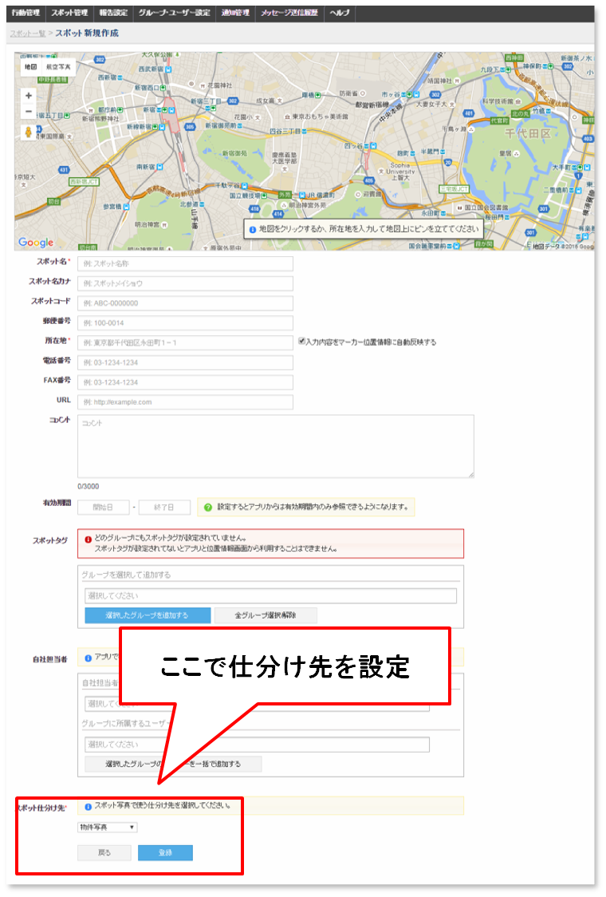
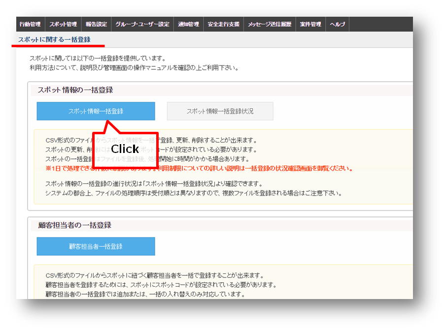
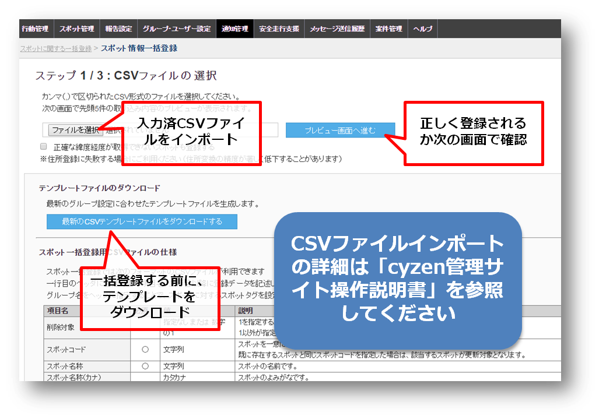
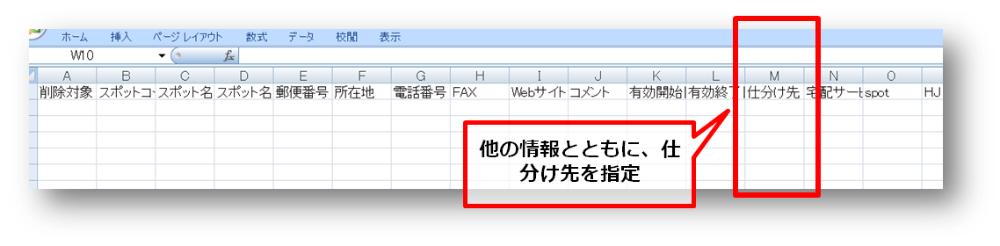
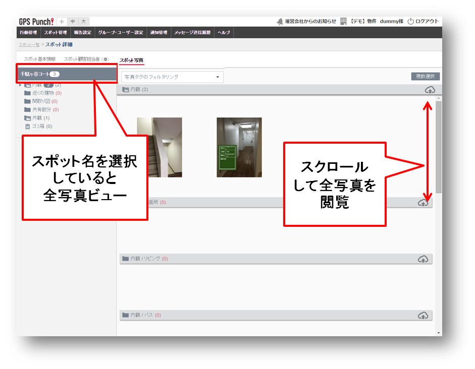
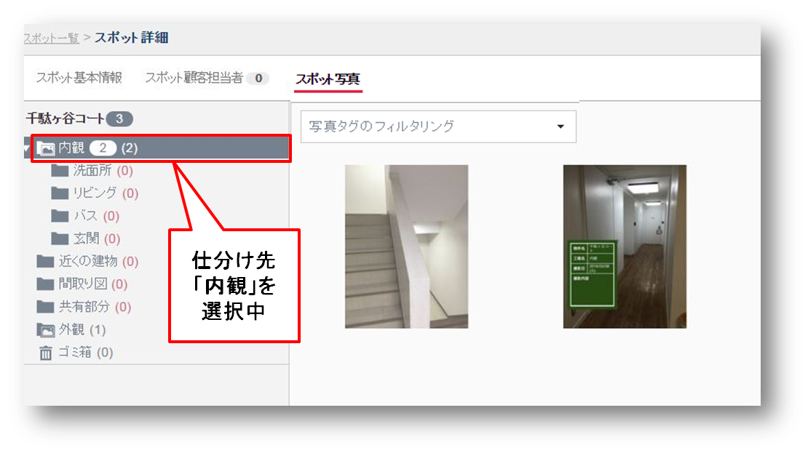
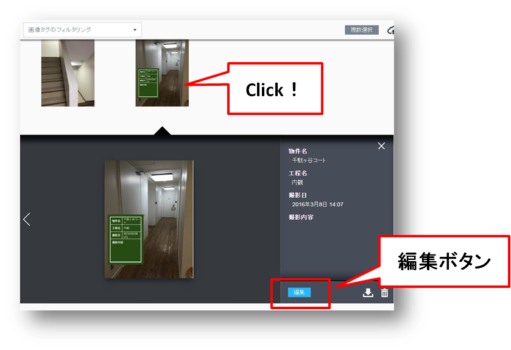
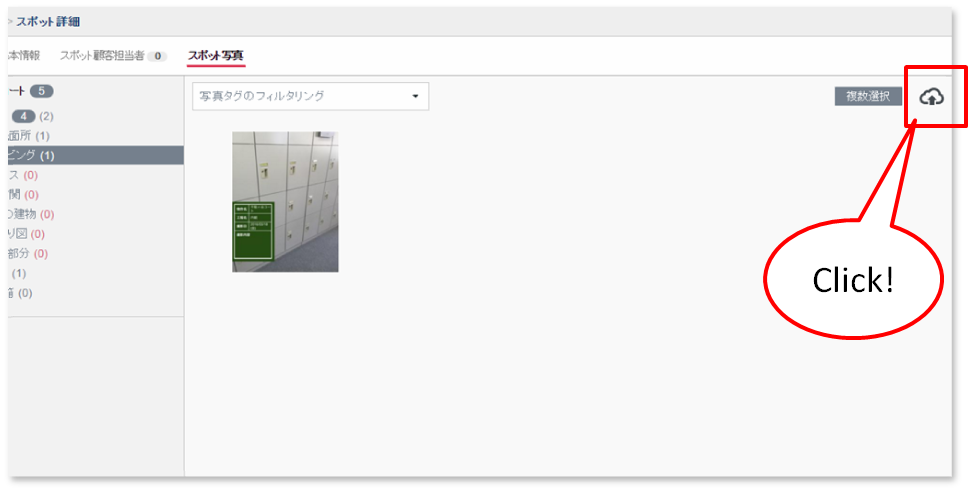
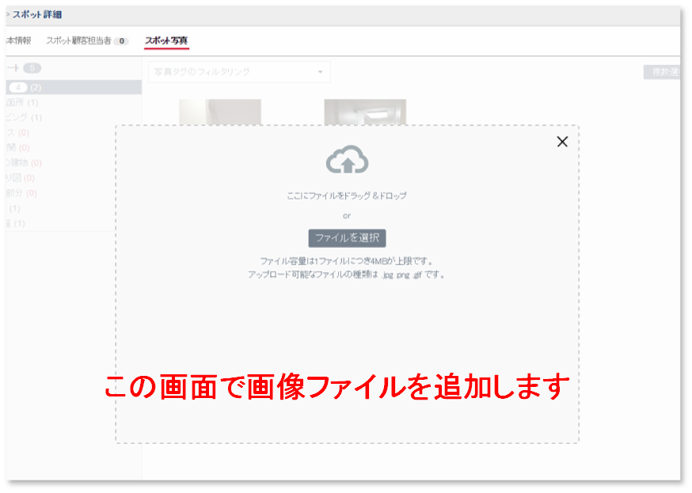
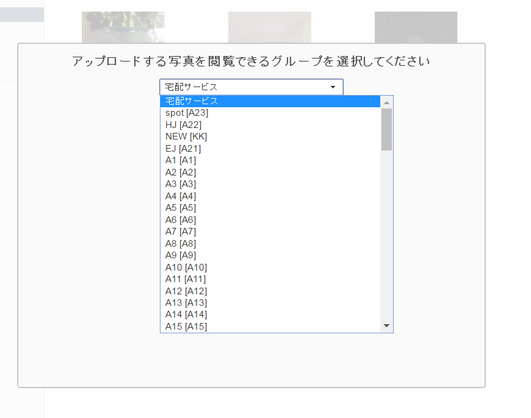

3. 運用時の操作方法（管理サイト）¶
注釈
本章の操作はシステム管理者またはグループ管理者で行います。
3-1. スポット新規登録で仕分け先を設定する¶
- スポットの新規登録をするときに、仕分け先を設定します。
- メニューバーの「スポット管理」＞「スポット一覧」をクリックし、「新規登録」ボタンを押します。
{kind=link}
「スポット新規作成」画面になります。「写真の仕分け先の設定」は一番下で設定します。
{kind=link}
注釈
新規作成ではなく、登録済みのスポットに仕分け先を設定するときは、-> 3-8. スポットの仕分け先を変更する
3-2. スポット一括登録で仕分け先を設定する¶
CSVファイルインポートにより「スポット一括登録」や「スポット一括更新」をするときに、仕分け先も設定することができます。 一括登録・更新の詳しい手順については「cyzen管理サイト操作説明書」を参照してください。
「スポット管理」＞「一括登録」＞「スポット情報一括登録」を押します。
{kind=link}
「スポット情報一括登録」の画面で、「最新のCSVテンプレートファイルをダウンロードする」のボタンを押します。
{kind=link}
「spot_header_201609****」というファイルがダウンロードできます。「仕分け先」のセルに、あらかじめ登録済みの仕分け先名を入力します。
{kind=link}
※入力できるのは、「登録済みの仕分け名」または「未分類」「空欄」です。「未分類」「空欄」で指定した場合と、仕分け先が正しく指定されなかった場合は、「未分類」のままとなります。
注釈
- 「スポット一括更新」をするときの注意点
- ・仕分け先が「未分類」（まだ指定されていない）のスポットのみ、更新できます。・すでに仕分け先が指定してあるスポットに他の仕分け先を指定しても、更新できません。（エラーメッセージが返されます）
3-3. アプリから送信された写真を閲覧する¶
- メニューバーの「スポット管理」＞「スポット一覧」の画面でスポットを選択し、一番右端の「詳細」をクリックで、スポットの詳細画面に移動します。
- スポットの件数が多い場合は検索して絞り込みます。
{kind=link}
- スポット詳細画面は「基本情報」「顧客担当者」「写真」の３つをタブで切り替えます。
- 「スポット写真」タブをクリックで、写真一覧になります。
{kind=link}
スポット名を選択しているときはすべての写真を、仕分け先項目を選択すると仕分け先ごとの写真が閲覧できます。
 {kind=link}
{kind=link}
3-4. スポット写真を編集する¶
写真をクリックすると、写真に連携している情報（メタデータ）を確認できます。
{kind=link}
「編集」ボタンをクリックすると、情報の一部を編集できます。「完了」ボタンで編集を完了します。
注釈
「撮影日時」「撮影者」などは編集できません。
{kind=link}
3-5. スポット写真のタグ編集・ダウンロード・削除を行う¶
- スポット写真をタグあり・タグなしなどでまとめて選択することができます。
- 「写真タグの変更」「選択した写真のダウンロード・削除」ができます。
{kind=link}
- 上と同じ操作を「全写真ビュー」からも行うことができます。
- 違う仕分けにまたがって写真を同時に選択できます。
{kind=link}
3-6. スポット写真をアップロードする¶
スポット写真として外部から画像をアップロードして保存できます。 スポット写真閲覧画面にある「アップロード」アイコンを押します。
{kind=link}
ファイルをドラッグ＆ドロップ、またはファイルを選択します。
{kind=link}
写真を閲覧できるグループを選択してから、アップロードします。
{kind=link}
{kind=link}
{kind=link}
{kind=link}
{kind=link}
{kind=link}